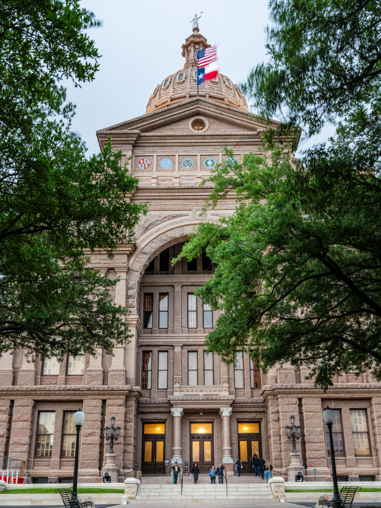
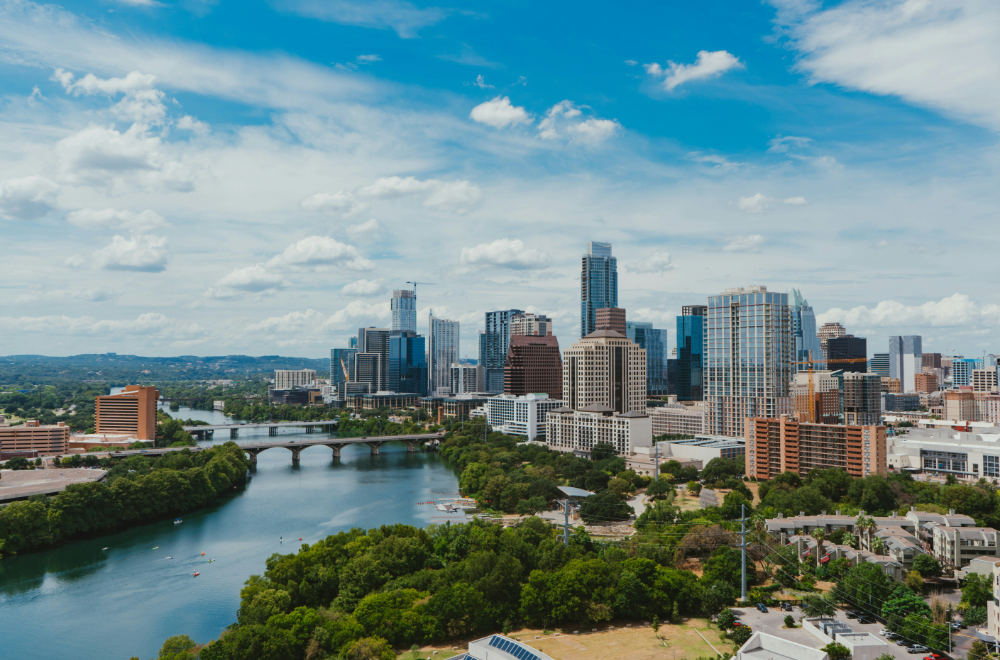
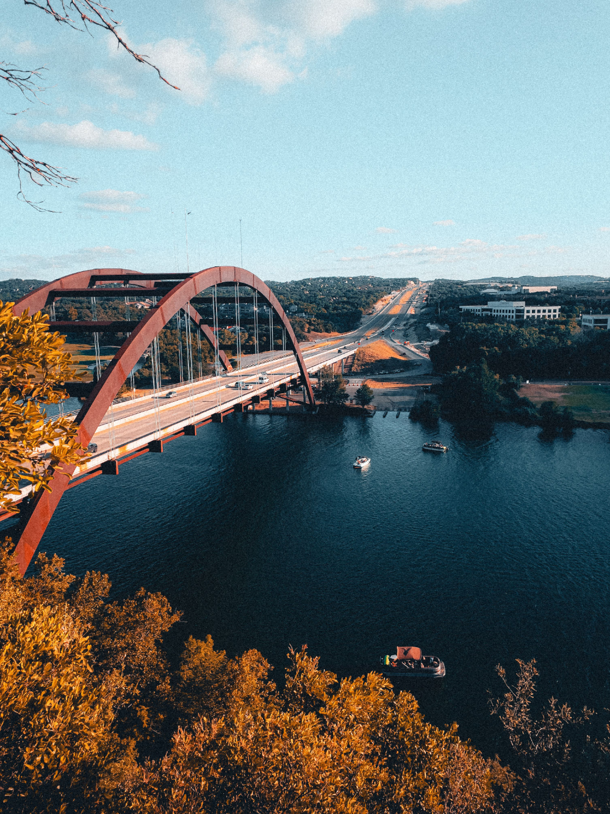

Overview of Austin

Austin, the state capitol of Texas, is located along the Colorado River in the Central Texas region. It was incorporated as a city on December 27, 1839 under the name "Waterloo"—a name which was quickly changed to "Austin" in honor of Stephen F. Austin. There are numerous lakes and rivers throughout the city, most notable of which are Lady Bird Lake and Lake Travis, two large reservoirs along the Colorado River. The urban city covers just over three hundred square miles, and due to its positioning the city has a variable climate. It is located in a transitional zone between the arid deserts of the Southwest and the humid biomes (e.g. forests, grasslands; climates with lush plant life) of the Southeast. In other words, summers are very hot (with temperatures often reaching 95 °F and above), winter sees an average daytime high of 63 °F, and humidity varies greatyly depending on the direction of the wind.
The city's unofficial motto is "Keep Austin Weird", which is as much a representation of the unique and diverse culture of Austin as it is a symbol of protest against the cities rapid growth that threatens the local culture it was built upon. Long time residents feel that the development of the city betrays its roots as a community of hipsters and nonconformists. Many who have lived in Austin for decades feel that it prioritises big companies and expansion over the quality of life of those who live there; the same small businesses that made Austin can no longer afford the higher operation and property costs.
Despite the city's significant development, much of Austin still embraces its roots and continues to keep the culture alive. Theater arts and music are very prevalent aspects of it. Austin hosts several annual film festivals, and there are venues playing live music year round. In fact, Austin's official slogan is actually "The Live Music Capital of the World" because of how integral live music is to the culture. Food is another important aspect of the local culture. Foods such as breakfast tacos, queso, craft beer, and, shocking to no one, barbeque (especially brisket) are staples of Austin cuisine. Kolaches are also popular, not just in Austin but also Central Texas as a whole, because of the large Czech and German population in Texas.

Economy
Austin is considered one of the fastest growing cities in the United States in terms of economic wealth, and has been consistently growing for several decades now. It boasts a strong business-sector with a large number of companies in very profitable and in-demand industries. The city has a booming job market and some of the highest paying jobs in the country. Its low cost of living makes it an attractive location to businesses, both big and small, as well as individuals.
In 2024, Austin's unemployment rate was 3.4% (for context, 4-5% is generally considered the ideal, healthy amount). The median yearly income for households that same year was $83,830, and the cost of living was estimated to be around $65,576 by the US Bureau of Labor Statistics after a survey they conducted in 2022. This dollar amount represents the average yearly salary needed to pay for basic necessities such as housing, transportation, and food in Austin. Based on those numbers, most households are able to live comfortably in the city. Compared to the state average salary of $55,200 a year ($4,600 a month), Austin's average salary is $72,864.
Transportation
Austin encourages walking, biking, and public transit, and has good infrastructure to facilitate that form of travel. Available public transportation includes the local bus service, a BRT service, a 32 mile hybrid rail system, a rural system to reach communities outside of town, and a public bike-sharing system of electric bikes. Of course, the roads were paved with vehicles in mind, so that is the way most people travel (either via ride-share or personal vehicles), but there are alternative ways to get around town.
Top Job Fields in Austin
The top five industries in Austin are technology, healthcare, manufacturing, hospitality, and education.
| Rank | Job Title | Local Median Salary | National Median Salary |
|---|---|---|---|
| 1 | Software Engineer | $146,227 | $147,524 |
| 2 | Nurse Practitioner | $129,149 | $130,295 |
| 3 | Radiation Therapist | $103,923 | $104,845 |
| 4 | Construction | $94,332 | $95,168 |
| 5 | RN | $87,599 | $87,868 |
Demographics
As of 2024, Austin had a total population of 1,035,002 and 479,938 households, putting the average number of residents per household at 2. Most of the population falls between the ages of 24 to 45, with only 11% over 65 and 18% under 18. The median age in Austin is 34 years old, and there is a near even split between the number of men and women, with a slightly higher number of men. About 47% of people in Austin are White, 33% are Hispanic, 7% are Black, 9% are Asian, and 5% are mixed as of the 2020 census. In 2024, 92% of the population had a high school diploma, and 61% had a bachelors degree or higher.
Education
The largest public university system in America, The University of Texas System, is based in downtown Austin. This public university system is the largest in America, and it's flagship university is the University of Texas at Austin. UT Austin boasts over 40,000 undergraduates and 11,000 graduates. Many other colleges and universities are located in Austin also, including community colleges and universities specializing in sciences, arts, and theology.
Local Hotspots
Austin is home to a variety of entertainment and scenic spots from theater to outdoor recreation. Austin has over 50 public swimming pools (both manmade and natural), parks with hiking trails and camping spots, museums, live theater and music venues, and more.

Outdoor Recreation
- Deep Eddy Pool: The oldest manmade swimming pool in Texas.
- Barton Springs Pool: America's largest natural swimming pool that is located in an urban area.
- The Barton Creek Greenbelt: A 7.25 mile public green belt that is great for hiking, mountain biking, and rock climbing.
- Lady Bird Lake: A reservoir along the Colorado River with calm waters that are ideal for kayaking and canoeing.
- Austin Zoo: A non-profit rescue zoo that focuses on animal rescue, conservation, and education.
Good Eats
- Franklin Barbecue: A BBQ restaurant that has sold out of brisket every single day since it opened in 2009.
- The Oasis on Lake Travis: An outdoor restaurant that serves Tex-Mex and overlooks Lake Travis.
- Birdie's: A popular restaurant and wine bar.
Entertainment
- Zach Theater: A professional theatre company that operates year-round and hosts live performances of plays, musicals, and original works.
- Texas Science and Natural History Museum: A museum that primarily focuses on natural history such as paleontology, geology, biology, and zoology.